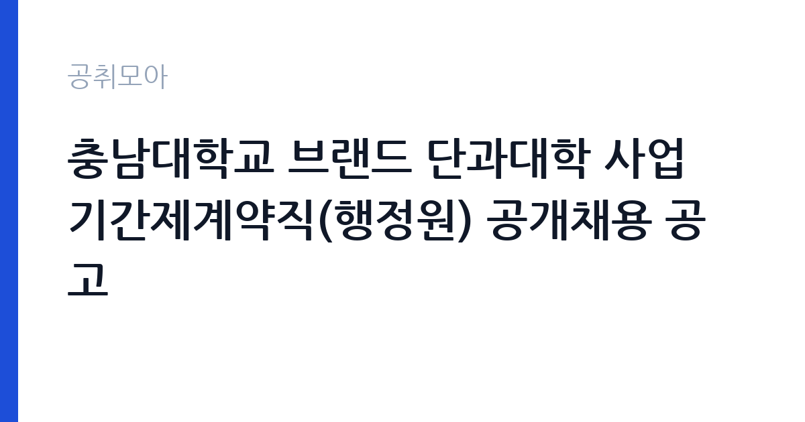

[국가기관] 충남대학교 브랜드 단과대학 사업 기간제계약직(행정원) 공개채용 공고
충남대학교 · 대전 · 마감 2026-10-26 (D-8) · 출처 나라일터

한눈에 보는 모집 조건
| 기관 | 충남대학교 |
|---|---|
| 공고명 | 충남대학교 브랜드 단과대학 사업 기간제계약직(행정원) 공개채용 공고 |
| 고용형태 | 기간제 |
| 근무지 | 대전 |
| 게시일 | 2026-10-19 |
| 마감일 | 2026-10-26 (D-8) |
지원자격, 이렇게 읽으세요
- 선임행정원 1명 행정원(사무원) 3명 행정원(디자인) 1명
- 접수 ~2026-10-26 마감
- 세부 조건은 원문 공고문 확인
응시 자격은 직급별로 다릅니다. 선임행정원은 사업 운영 경력을 요구하고, 행정원(사무원)은 일반 행정 실무를 담당할 인력을 뽑습니다. 행정원(디자인)은 디자인 실무 능력을 보는 자리로, 포트폴리오나 작업 이력이 평가에 영향을 줍니다. 공통 요건으로 학력 기준과 임용 즉시 근무 가능 여부, 국가공무원법상 결격사유 부재가 적용됩니다. 충남대학교 취업규칙에 따른 인사·복무 규정이 적용되며, 계약 기간은 사업 기간과 연동됩니다. 지원 시 자신이 어느 직급에 지원하는지 응시원서에 정확히 표기해야 합니다.
이 공고의 포인트
이 공고의 실질적 장점은 진입 문턱과 직무 선택지입니다. 세 가지 직급을 함께 뽑기 때문에 행정 경력이 짧아도 사무원으로 지원할 수 있고, 디자인 전공자는 별도 트랙으로 들어갈 수 있습니다. 대학 사업단 근무는 정부지원사업의 회계·성과관리 절차를 몸으로 익힐 수 있는 자리라, 이후 공공기관이나 대학 행정직으로 이동할 때 경력으로 인정받기 쉽습니다. 근무지가 대전 유성구로 고정되어 있고 주 5일 근무라는 점도 실무자에게는 분명한 조건입니다.
전형은 어떻게 진행되나
전형은 서류전형과 면접전형으로 진행됩니다. 서류에서는 응시 자격과 경력기술서의 구체성을 보고, 면접에서는 직무 이해도와 조직 적응력을 확인합니다. 접수는 이메일(dydwns7578@cnu.ac.kr) 한 곳으로만 받으며, 마감은 2026년 10월 26일 오후 3시입니다. 제출서류는 공고문에 첨부된 양식을 그대로 사용하고, 서명과 날인이 빠지면 접수되지 않을 수 있습니다. 선임행정원 지원자는 경력증명서로 경력 기간을 입증해야 하므로 발급에 걸리는 시간을 감안해야 합니다.
원문에서 확인한 전형 방식
○ 선발직급 : 선임행정원 1명, 행정원(사무원) 3명, 행정원(디자인) 1명 ○ 고용형태 : 기간제 ○ 접수기간 : 2026. 10. 19.(월) ~ 10. 26.(월) 15:00 ○ 응시방법 : 이메일 접수(dydwns7578@cnu.ac.kr) ○ 문의처 : 충남대학교 대학혁신지원과 ☎ 042-821-6094
이런 분께 추천해요
- 대학이나 공공기관에서 행정 실무를 익히고 싶은 신입·경력자
- 디자인 툴 작업과 인쇄물 제작을 직접 해본 디자인 전공자
- 사업단 운영 전반을 맡아보고 싶은 행정 경력자
지원 전 체크리스트
- 지원 직급을 응시원서에 정확히 표기했는가
- 경력기술서에 담당 업무와 기간을 구체적으로 적었는가
- 마감이 10월 26일 오후 3시임을 일정에 반영했는가
- 제출서류 서명·날인과 파일 형식을 확인했는가
모집 일정과 제출 타이밍
접수 기간은 2026년 10월 19일부터 26일 오후 3시까지입니다. 서류전형 결과 발표와 면접 일정은 개별 통보되며, 최종합격자의 임용일은 사업 일정에 맞춰 정해집니다. 기간제계약직이므로 계약 만료 후 고용관계가 소멸하고, 재계약은 사업 지속 여부와 근무 성과에 따라 결정됩니다. 마감 시각이 오후 3시라는 점 때문에 제출은 마감일 오전에 끝내는 계획이 안전합니다.
직무 이해하기: 국가기관
행정원 사무원은 사업단의 일상 행정을 담당합니다. 예산 집행과 정산, 문서 작성과 관리, 회의 운영과 일정 조율이 중심입니다. 행정원 디자인은 사업 홍보물과 안내 자료, 행사 물품의 시각 자료를 제작합니다. 선임행정원은 이 업무를 총괄하고 신입 직원의 업무를 배분합니다. 세 직급 모두 학내 부서와 외부 업체 사이에서 일정과 서류를 맞추는 일이 많으므로, 정확성과 마감 관리가 직무의 핵심입니다.
자기소개서 작성 팁
자기소개서는 지원 직급에 맞춰 초점을 완전히 바꿔야 합니다. 사무원 지원자는 문서 작성과 예산 정산 경험을 구체적 사례로 쓰고, 디자인 지원자는 작업물의 목적과 결과를 설명하세요. 선임 지원자는 몇 명을 이끌고 어떤 사업을 운영했는지를 숫자로 제시하는 편이 효과적입니다. 공통적으로 중요한 것은 정확성입니다. 마감을 지키고 오류를 줄인 경험을 한 가지 사례로 정리하면 대학 행정 직무에 맞는 인상이 남습니다. 사업 참여 동기는 브랜드 단과대학 사업의 목적과 연결해 쓰세요.
면접 준비 포인트
면접에서는 지원 직급에 따른 실무 질문이 나옵니다. 사무원은 문서 작성과 예산 처리 절차를 아는지, 디자인은 작업 도구와 일정 관리 방식을 묻습니다. 공통으로 나오는 질문은 마감이 몰릴 때 우선순위를 어떻게 정하는지입니다. 여러 부서의 요청이 동시에 들어오는 사업단 특성상 조율 경험이 중요하게 평가됩니다. 계약직 신분과 1년 단위 재계약 조건을 이해하고 있는지도 확인 대상이므로, 조건을 정확히 인지한 상태로 답해야 합니다.
급여·근무조건 읽는 법
기간제계약직 보수는 충남대학교의 계약직 보수 기준과 경력에 따라 정해집니다. 이 공고문에는 금액이 요약되어 있지 않으므로, 정확한 보수는 원문 공고문의 보수 항목이나 대학혁신지원과(042-821-6094)로 확인해야 합니다. 일반적으로 기본급에 직무 관련 수당이 더해지고, 4대보험과 퇴직급여는 관련 법령에 따라 적용됩니다. 근무는 주 5일, 1일 8시간 기준이며, 휴가와 복무는 충남대학교 취업규칙을 따릅니다. 계약 기간이 사업 기간에 묶여 있다는 조건은 보수 안정성과 직결되므로 함께 확인하세요.
자주 묻는 질문
- 세 직급 중복 지원이 가능한가요
공고상 하나의 직급을 선택해 지원하는 구조입니다. 응시원서에 지원 직급을 정확히 표기해야 하며, 중복 지원 가능 여부는 원문 공고문에서 확인하세요. - 정규직 전환은 되나요
이 공고의 고용형태는 기간제이며 정규직 전환을 전제로 하지 않습니다. 재계약은 사업 지속 여부와 근무 성과에 따라 결정됩니다. - 디자인 직급도 행정 업무를 하나요
행정원(디자인)은 홍보물과 안내 자료 제작이 주 업무이고, 사업 운영에 필요한 행정 업무가 일부 더해지는 구조입니다. 세부 업무 범위는 공고문을 확인하세요.
함께 보면 좋은 공고
[국가기관] 「충남대학교 AI인재양성부트캠프사업단」 전담직원(팀원) 공개 채용 공고 — 마감 2026-10-25[국가기관] 충남대학교 브랜드 단과대학 사업 연구교수 공개채용 공고 — 마감 2026-10-26[국가기관] 충남대학교 AI거점대학 사업 산학협력중점교수 공개채용 공고 — 마감 2026-10-26출처: 나라일터 공개정보를 바탕으로 공취모아가 정리한 안내글입니다. 모집 조건·일정은 변경될 수 있으니 지원 전 반드시 원문 공고문을 확인하세요. 본 글은 정보 제공용이며 합격을 보장하지 않습니다.